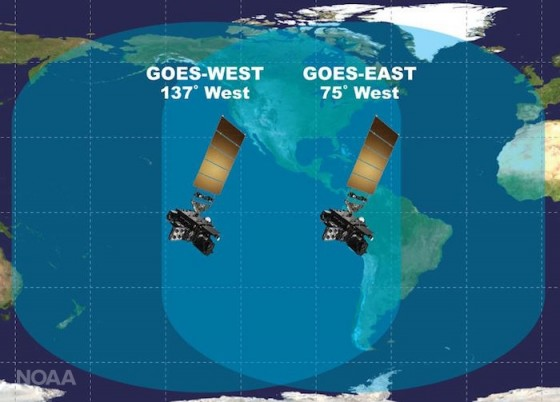

GOES-17 (GOES-West) e GOES-16 (GOES-East)
O satélite NOAA GOES-17 transmitiu seus primeiros dados do Geostationary Lightning Mapper (GLM). Os dados do GLM no vídeo abaixo mostram as tempestades se intensificando rapidamente e formando uma linha impressionante nas planícies dos EUA em 9 de maio de 2018.{kind=link}
GOES-17 (GOES-West) e GOES-16 (GOES-East)
O Geostationary Lightning Mapper a bordo do GOES-17 (GOES West), assim como no GOES-16 (GOES East), está transmitindo dados nunca antes disponíveis para meteorologistas. O mapeador observa relâmpagos no hemisfério ocidental, dando aos meteorologistas uma indicação de quando uma tempestade está se formando, se intensificando e se tornando mais perigosa. Aumentos rápidos de raios são um sinal de que uma tempestade pode se fortalecer rapidamente e produzir um clima severo.
Além disso, em grandes sistemas de tempestade de longa duração, o raio pode viajar centenas de quilômetros antes de atingir o solo. O GLM pode mostrar áreas de previsão longe da linha principal de tempestades, onde o risco de raios atingirem o solo apresenta um risco à segurança pública. Em áreas secas, especialmente no oeste dos Estados Unidos, as informações do instrumento ajudarão os meteorologistas e, em última instância, os bombeiros a identificar áreas propensas a incêndios causados por raios.
Os dados do GLM servirão a um papel essencial para ajudar a manter vidas e propriedades americanas seguras quando o GOES-17 estiver posicionado em sua posição operacional GOES West, onde cobrirá uma vasta faixa escassa de dados do Oceano Pacífico e monitorará áreas propensas a incêndios de alto risco no oeste dos EUA.
Veja também:
21/Mai/2018 21:22:22